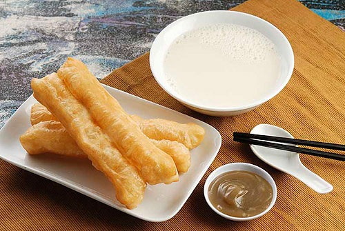

Bomboloni- These Italian Donuts better known as a Bomboloni are made with a soft yeast dough, fried, rolled in sugar then filled with your favourite pastry cream filling. Served for breakfast and snack or just about anytime you want.
Beignet- To put it simply, beignets are square shaped pieces of dough that are deep fried and generously sprinkled with confectioners sugar. They're best served hot and are best paired with a cup of coffee, or café au lait!
Greek Donuts- One of the pleasures of a Greek holiday comes in those moments after dark (and after dinner) when everyone moves to the tables in a local square to drink coffee and eat plates of tiny cinnamon-scented doughnuts.

Glazed Donuts- There’s just something about the fluffy and light, yet sweet richness to them that is positively addicting, in the very best way.

Youtiao- These Chinese crullers are really good alone when made fresh with some dipping sauce made with some soy sauce, hot chili oil and a splash of vinegar.
German Berliners- Simply, a Berliner is a round fried treat made from enriched dough and filled with jam (or some other filling). Basically, a jelly donut. But it’s more!
Sel Roti- Sel Roti is a crispy snack from the Indian state of Sikkim, with origin in Nepal, that is popularly made during the Tihar Festival. This mildly sweet roti is served with spicy curry.